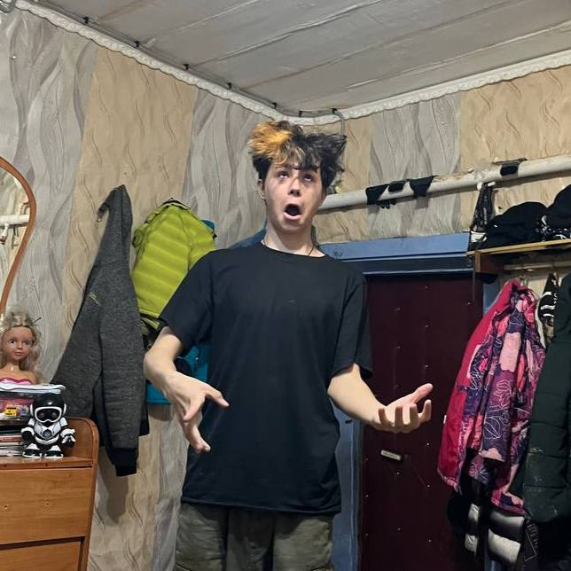
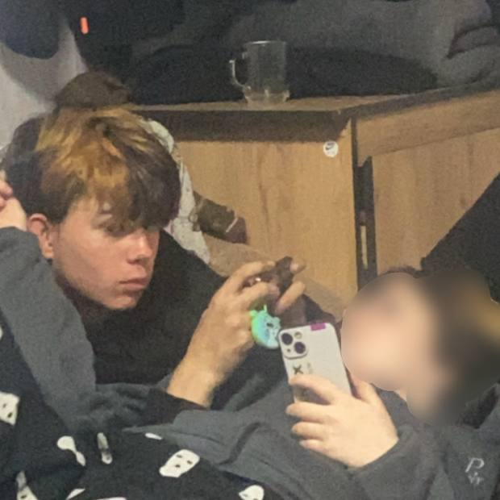
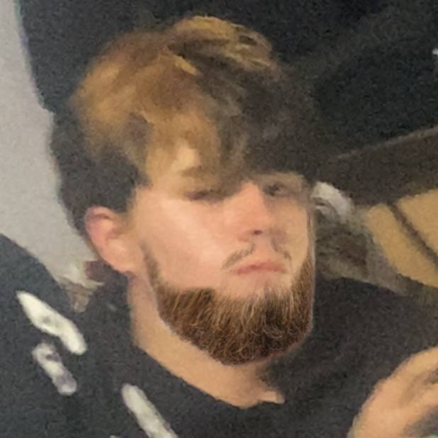
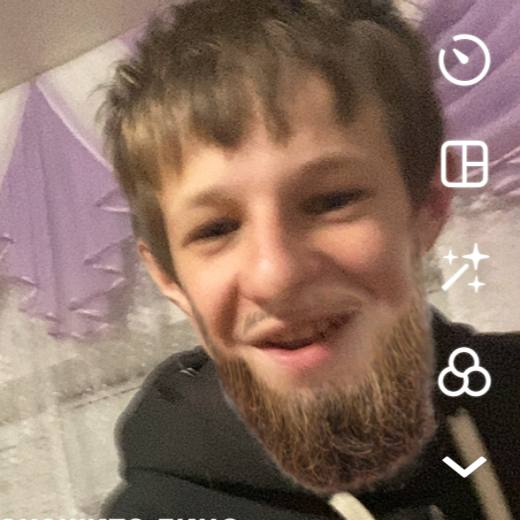
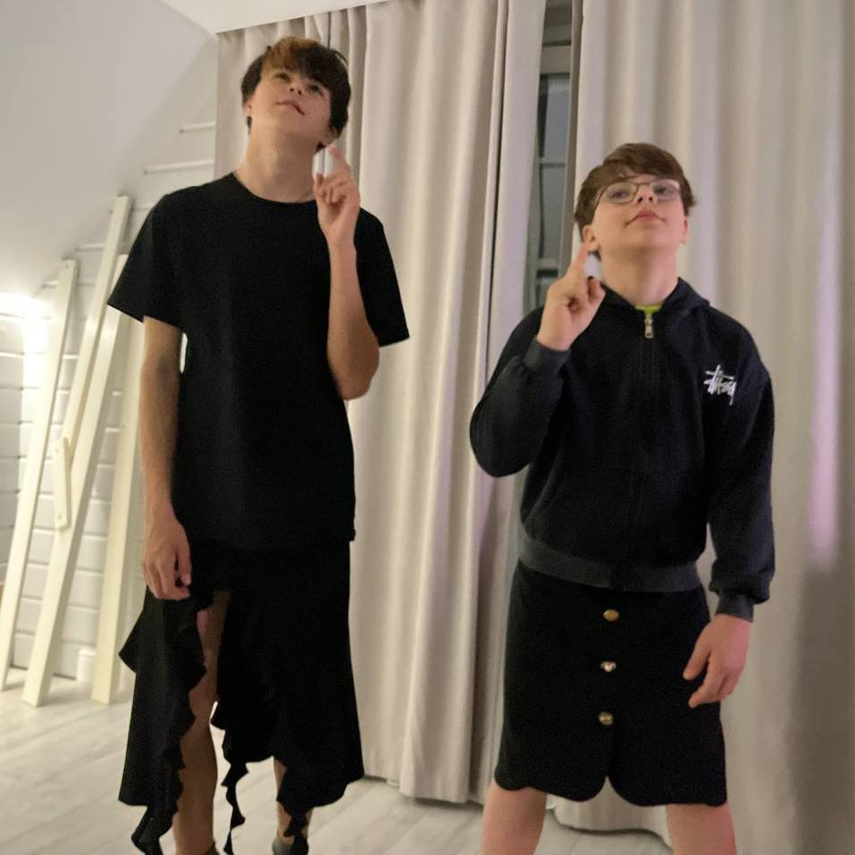
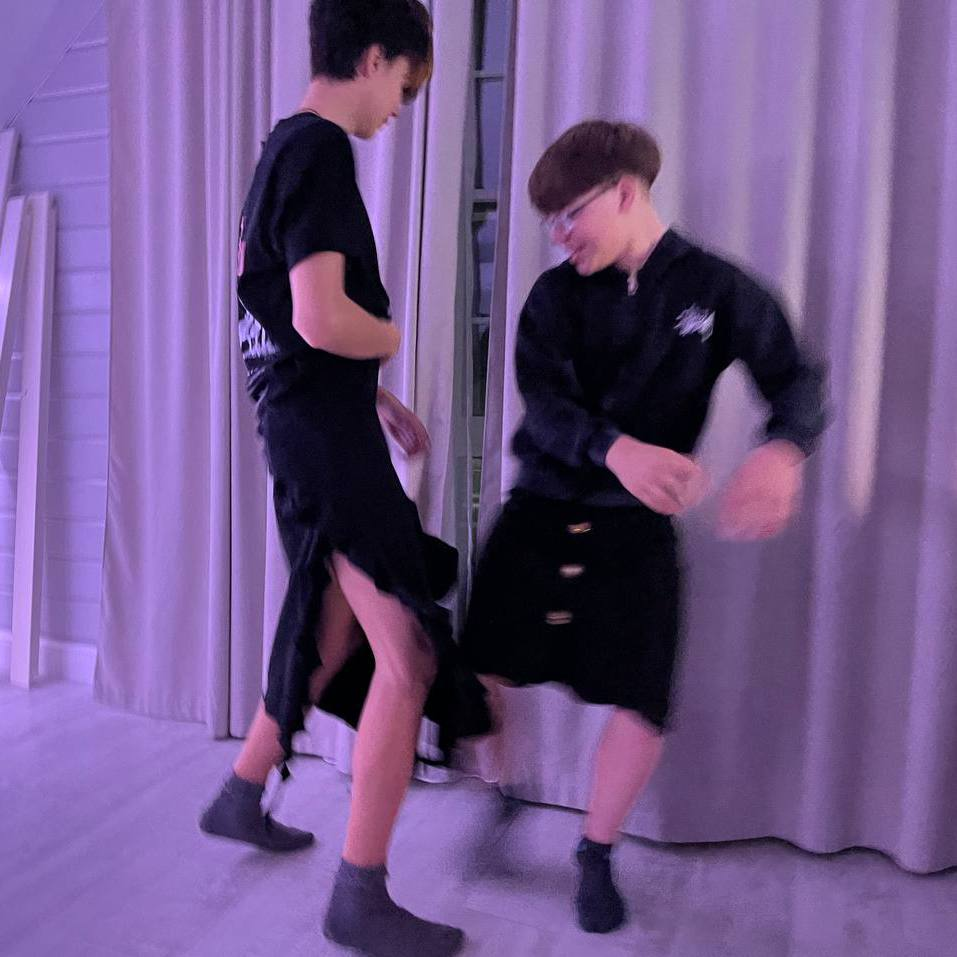
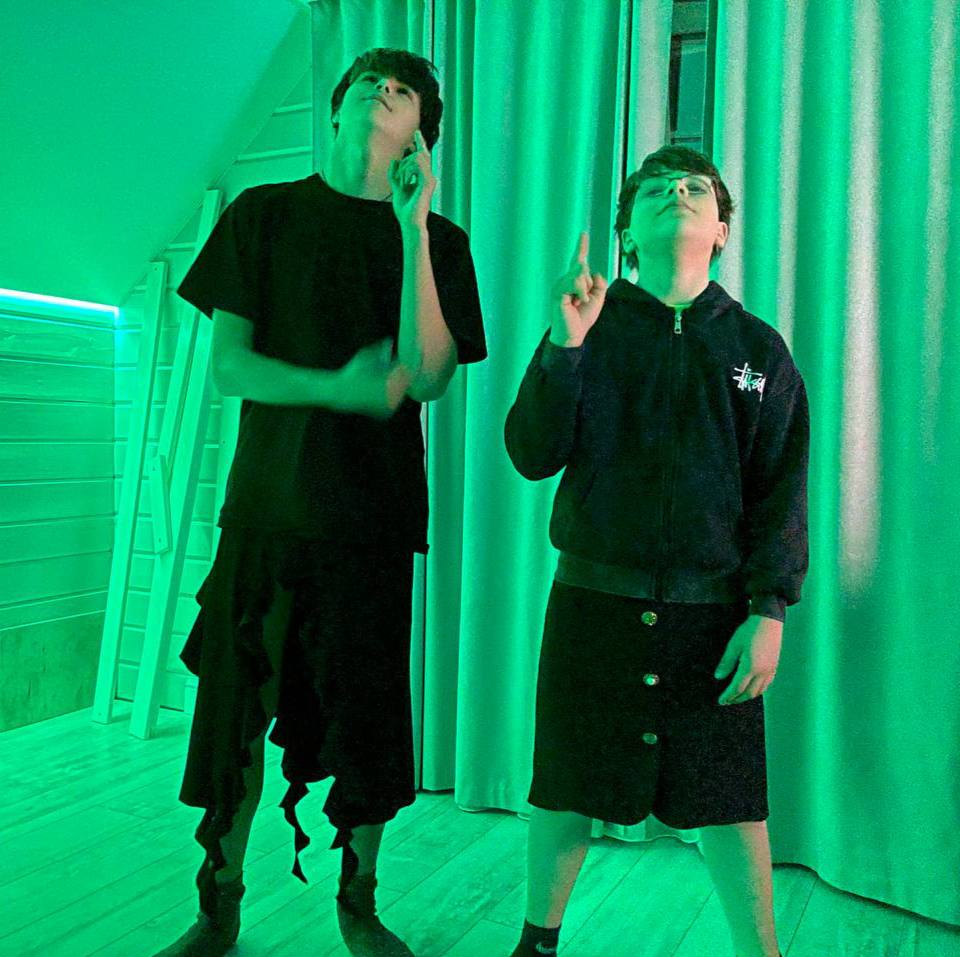
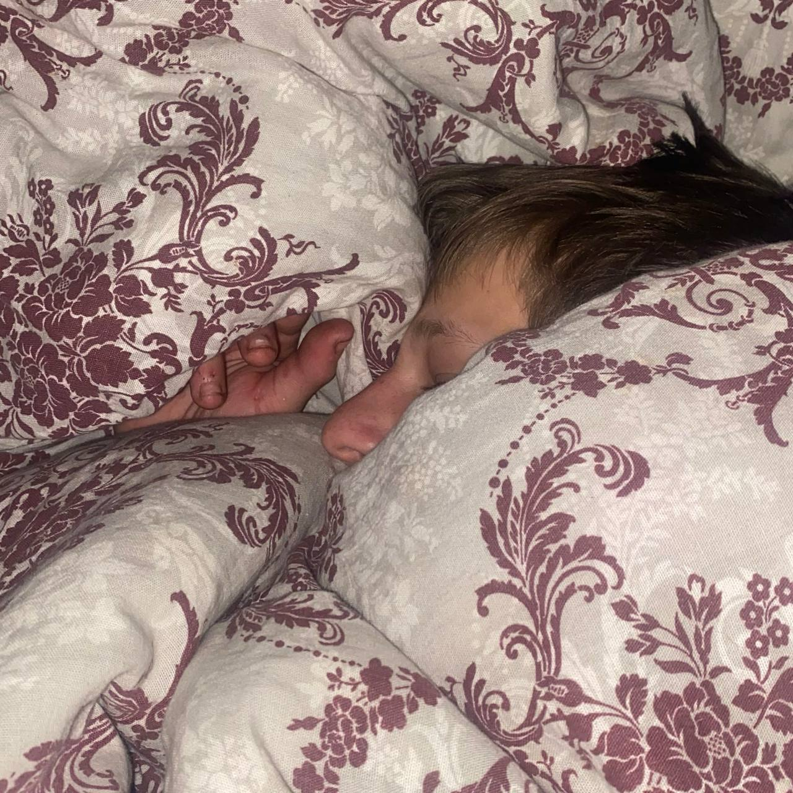

Троицко-Урайские вести
Главные события месяца
Тёма решил попробовать, что такое снюс
Арсений дал Артёму снюс химку, и Артём случайно проглотил слюну. Его стошнило с невиданной силой. Ему было так хуёво, что он поклялся больше никогда не приближаться к никотиновым пакетикам. Говорят, даже запах мяса теперь вызывает у него рвотный рефлекс.

Трип от энергоса?
Гриша въебал энергосов хуй знает сколько, добавил туда гаража и алтая. Его так жёстко трипануло, что кукуха уехала в отпуск на две недели. После этого он пошёл к своей жинке и показал ей какой он поко из бравл старса.

Тайное заседание философов Диприк и Торч
Скрытой камерой были замечены Грека и Саня, они лежали на диване и нихуя не понимали смысл жизни, но при этом выглядели просветлёнными. "Аптека ни с чем не сравнится, но пиво роднее", сказала Саня. Грека только кивнул и уставился в шкаф на против его. Живы, здоровы, и мы за них рады.

Чеченская борода у Греки
Ваще не ебу, откуда борода. В тот же день и в том же месте она появилась у него на лице. Сам Грека бороду бреет, но она отрастает снова, как у чиченцов езже

Арсений уже давно отращивает бороду для контракта с RedBull'ом
Арсений начал отращивать бороду после того, как с ним разорвали контракт с RedBull'ом. "Теперь я рекламирую самогон", заявил он, почёсывая бороду. По слухам, ему уже предложили лицо бренда ЗАО "деревенский самогон".

Грека и Тёма ровные пацаны
На фото видно, как Грека и Тёма стоят в позе, будто они только что побили 15 башен близнецов голыми руками. Деревня затаила дыхание.

Грека с Тёмой что то не поделили
На фото видно, как Грека и Тёма дерутся между собой в карнавальных костюмах. Причина конфликта осталась за кадром, но очевидцы говорят о последней бутылке АЛТАЯ. Поединок был эпичным и закончился ничьей.

Саня успокоила их
Саня успокоила их тем, что сказала "Если не успокоитесь, пиво завтра вам не куплю, а тебе, Гриша, аптеки больше не дам". Моментально они успокоились. Друнья обнялись и забыли обиты.

Не ебу, что было дальше, но Тёма стал ровным пацаном (точно)
В ТГК "Уроды" Артём отправил фотку, как он пришёл в парикмахерскую стричься, потому что ровные пацаны не впускали его в свою группировку из-за лохматой причёски.
.jpg)
Потом Артём показал, как он постригся
Спустя минут 10–20 Артём присылает фото, где он уже постриженный. Ну реально похож на ровного пацана. "Примут или нет хуй знает, но я готов за брата порвать", написал он в комментарии.
.jpg)
Арсений уработался
Арсений просто спит. Спит уже 1.3 часа. Периодически переворачивается и бормочет что-то про энергетики. Редакция желает ему красочных снов.
